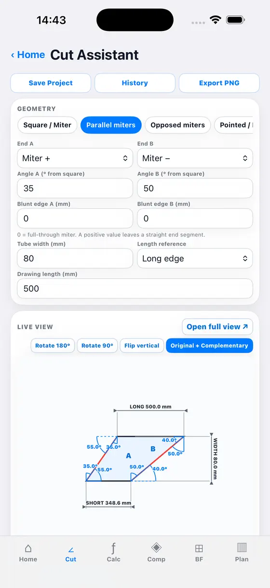
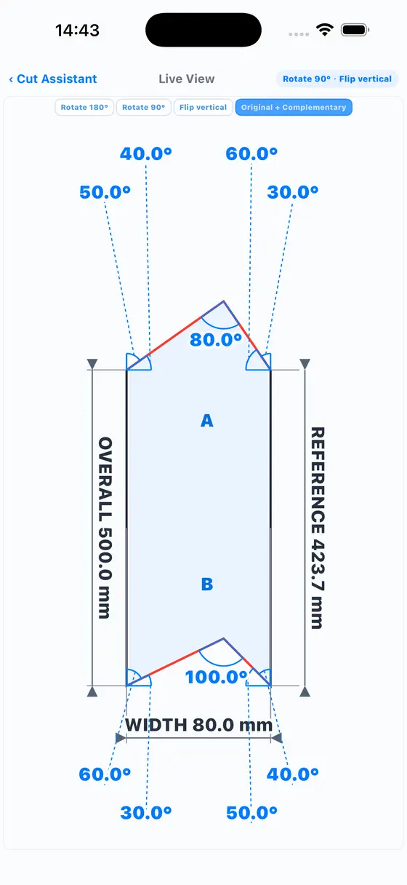
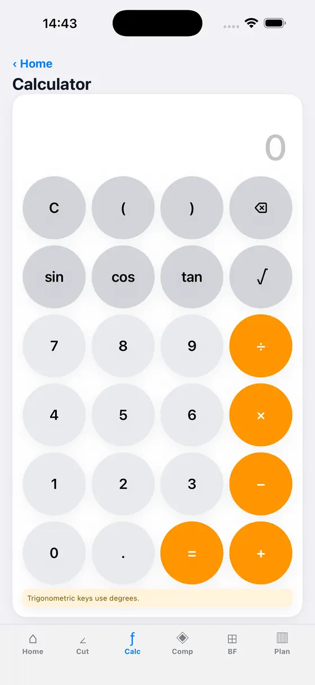

도면은 40°. 톱은 50°. 둘 다 맞습니다.
도면은 한 각도를 주고, 기계의 눈금은 다른 각도를 읽으며, 그 사이 어딘가에는 날이 내려오기 전에 장갑 낀 손으로 머릿속에서 해야 하는 90 − 40 = 50 계산이 있습니다. Tube Miter Calculator가 이 변환을 대신 해주고 각도와 여각·보각를 나란히 보여줍니다 — 긴/짧은/가운데 모서리 길이와, 눈앞의 기계에 맞춰 회전할 수 있는 치수 도면과 함께.
작업장, 철골 조립, 난간과 롤케이지 제작, 목수·건구직인, DIY 인테리어를 위한 앱 — 더불어 매일의 계산(복합 절단, 보드 피트, 절단 계획)도 제공합니다. 완전 오프라인으로 작동하며 미터법/야드파운드법을 지원합니다.


도면의 각도는 톱에 적힌 숫자가 아닙니다
모든 직업이 겪는 문제입니다: 계획서, 스케치, 배관 레이아웃은 한 방향으로 잰 각도를 주는데, 눈앞의 마이터 톱, 콜드 톱, 촙 톱, 밴드 톱 테이블, 마이터 게이지는 반대 방향으로 눈금이 매겨져 있습니다. 한 값은 직각 절단 기준, 다른 값은 톱받이 기준, 또 다른 값은 둔각 값입니다. 머릿속으로 환산하죠 — 그리고 두 숫자가 거의 바꿔 쓸 수 있어 보일 때, 바로 그 환산이 부재를 망치는 지점입니다.
🏗 작업장과 철골 팀
난간, 벨러스트레이드, 온실 골조, 현장 펜스. 단면도는 맞꼭지각을 주고 기계는 다른 값을 원합니다. 한 번의 실랑이 끝에 누군가 먼지 쌓인 휴대폰 키패드로 90 − 47.5를 계산합니다.
🔧 제작과 모터스포츠
롤케이지, 섀시 노드, 배기계. 각 노드마다 서로 다른 두 절단 각도가 있고, 각각에 여각도 필요합니다 — 노치를 내기 전에 한 노드가 관리해야 할 숫자 네 개가 됩니다.
🪚 목수·건구직인·DIY
사선 프레임, 테이퍼 박스, 액자, 몰딩과 걸레받이 코너 처리. 게이지마다 직각 기준으로 읽는 것과 톱받이 기준으로 읽는 것이 섞여 있고, 작업 중간의 90° 전환이 비싼 경목을 토막으로 만듭니다.
40°와 50°가 위험한 짝인 이유
40°와 50°는 여각 관계(합이 90°)이라서 같은 접합부 옆에서 둘 다 완전히 합리적으로 보입니다 — 그리고 차이는 10°뿐입니다. 조립체의 양쪽 끝을 모두 잘랐기 때문에 그 오차의 두 배가 접합부에 나타납니다.
암산의 최악의 구간은 바로 여기입니다:
- 45° ↔ 45° — 뒤집어도 보이지 않아 누구도 아무것도 알아차리지 못합니다.
- 30° ↔ 60° — 차이가 커서 실수는 보통 눈으로도 드러납니다.
- 40° ↔ 50°, 35° ↔ 55°, 47.5° ↔ 42.5° — 바꿔 쓸 수 있어 보일 만큼 가깝고, 부재를 폐기할 만큼 다릅니다. 실제로 오류가 발생하는 곳은 바로 여기입니다.
그리고 90°만이 아닙니다: 일부 도면 작업은 보각 값도 사용하므로 180 − a도 목록에 합류합니다. 그럴듯한 숫자 세 개, 올바른 세팅 하나, 파이프 한 본.


입력 하나로 얻는 것 — 계산 예시 a = 40°
| 값 | 의미 | 필요한 경우 | a = 40° |
|---|---|---|---|
| 마이터 각도 a | 직각 절단 기준 편차(직각 절단은 0°) | 직각 절단 기준으로 눈금 매겨진 눈금자·게이지 | 40° |
| 여각 90 − a | 같은 절단의 역방향 값 | 90°가 직각을 뜻하는 눈금, 톱받이 기준 값 | 50° |
| 보각 180 − a | 같은 선의 둔각 값 | 도면 작업, 분도기, 맞꼭지각 값 | 140° |
어느 숫자를 기계에 넣을지는 여전히 당신이 선택합니다 — 중요한 것은 날이 돌아가는 작업 도중에 그 값을 유도 필요가 없어졌다는 점입니다.
주요 기능
6가지 절단 형상과 5가지 작업장 계산기. 모두 오프라인에서 순식간에 계산됩니다.
∠ 6가지 절단 형상
직각/마이터, 평행 마이터, 대향 마이터, 뾰족/뾰족, 뾰족/V노치, V노치/V노치. 각 프리셋은 현실적인 기본값을 불러오므로 여섯 개가 아니라 하나의 숫자만 바꾸면 됩니다.
📏 90 − a를 더 이상 손으로 유도하지 않기
모든 절단에 대해 각도와 여각(90 − a)와 보각(180 − a)가 긴/짧은/가운데 모서리 길이와 함께 함께 출력됩니다 — 톱이 직각에서 0°를 읽든 90°를 읽든, 어떤 눈금과도 맞출 수 있습니다.
🖼 치수 표기 라이브 뷰
치수 화살표가 있는 전체 화면 실척 단면도. 90° / 180° 회전, 세로 뒤집기, 원래 각도+여각 또는 원래 각도+보각 라벨 전환으로 작업대 위 부재에 맞춥니다.
◈ 복합 절단
테이퍼 박스, 피라미드, 사선 프레임을 위한 마이터 각도와 날 기울기. 변의 개수, 측면 경사, 패널 높이와 두께를 입력하면 — 톱 세팅, 사고도, 모서리 오프셋을 얻습니다.
⊞ 보드 피트와 비용
두께, 폭, 길이로 목재 부피를 계산하고, 수량, 보드 피트당 가격, 선택적 손실 계수를 지원합니다. 미터법/야드파운드법.
▥ 재고 최적화
원목 길이, 날 두께, 끝 절단량과 필요한 조각들을 입력하면 — 실용적인 절단 계획을 세우고 남은 것을 알려 줍니다.
ƒ 작업장 계산기
도 단위 삼각함수(sin, cos, tan 및 역함수)를 갖춘 전용 키패드로 결과를 한 번 탭에 복사 — 장갑 낀 손으로 기본 iOS 계산기와 싸울 필요가 없습니다.
💾 프로젝트와 PNG 보고서
입력값을 프로젝트 이름으로 기록에 저장하고 다음 작업에서 다시 불러오며, PNG 보고서를 사진 앱이나 iOS 공유 시트로 바로 내보냅니다.
🔒 오프라인·프라이빗
인터넷 없음, 로그인 없음, 분석 없음. 단위(mm / in), 화면 켬, 초기화가 유일한 설정 — 나머지는 모두 기기 안에서 처리됩니다.
실제 작동 모습
iPhone 17 Pro Max의 실제 화면 녹화에서 잘라낸 네 개의 짧은 루프 — 앱은 스크립트화된 워크스루로 조작되어 화면의 모든 탭, 키 입력, 재계산이 진짜입니다. 음소거 자동 재생, 화면 자막 포함.
절단 형상 전환
여섯 프리셋을 차례로 탭 — 도면과 모든 길이가 그때그때 업데이트됩니다.
라이브 뷰: 회전, 뒤집기, 라벨 변경
전체 뷰를 열고 90° 회전, 세로 뒤집기, 각도 라벨을 전환합니다.
작업장 계산기
40 + 50 = 90, 이어서 내장 키패드로 sin(40°) — 결과를 한 번 탭에 복사.
다른 작업장 모듈
20°의 육면 복합 절단, 12장 목재 주문, 그리고 최적화 — 각 모듈은 입력하는 동안 계산됩니다.
사용 방법
작업대 위 접합부에서 톱에 넣을 숫자까지 4단계.
단계별 튜토리얼
앱의 모든 화면을, 실제 사용하는 순서대로.







실제 활용 사례
마이터 계산이 진짜 빛을 발하는 곳.
난간과 벨러스트레이드
난간을 기둥에 정확한 경사각으로 맞닿게 절단하거나, 물고기 입 새들을 파서 파이프가 기둥을 깔끔하게 감싸도록 하세요. 라이브 뷰를 돌려 계단 위에서 잡을 자세 그대로 접합부를 확인할 수 있습니다.

롤케이지, 섀시, 프레임
노드가 많은 관 구조는 대부분 뾰족 절단과 V노치입니다. 접합 각도를 한 번 설정하면 긴/짧은/가운데 길이가 나오고, 그 노드의 모든 파이프를 같은 숫자로 절단할 수 있습니다.

현장 맞춤 작업, 신호 없이
외지 현장, 해상 컨테이너, 지하 기계실에는 수신이 없습니다. 앱의 모든 것이 기기에서 작동하므로 필요할 때 계산이 항상 있습니다.
자주 묻는 질문
도면은 40°, 톱은 50°를 읽습니다. 어느 쪽이 맞나요?
둘 다 같은 절단을 설명합니다 — 여각 관계(합 90°)이기 때문입니다. 마이터 각도 a는 직각 절단 기준이고, 90 − a는 같은 선을 반대 방향에서 읽은 값입니다. 40/50이 사람을 헷갈리게 하는 이유가 바로 이것입니다: 두 숫자는 바꿔 쓸 수 있어 보이지만, 잘못 세팅하면 끝마다 10°, 접합부에서 20°의 오차가 생깁니다. 앱은 두 값을 나란히 출력하므로 현장에서 두 번째 값을 유도할 필요가 없습니다.
톱에서 각도를 세팅하나요, 여각을 세팅하나요?
기계 눈금이 어떻게 매겨져 있는지에 따라 다릅니다. 눈금이 직각에서 0°라면 마이터 각도 a를, 직각에서 90°(톱받이 기준 눈금)라면 90 − a를 세팅하세요. 일부 분도기와 도면 작업은 둔각 값인 180 − a를 사용합니다. 라이브 뷰에서 원래 각도 + 여각 / 원래 각도 + 보각 버튼으로 눈금 인쇄 방식에 맞게 도면을 표기하고, 항상 스크랩으로 먼저 확인하세요.
마이터 각도는 어떻게 정의되나요?
마이터 각도는 직각 절단 기준으로 측정되므로 직각 절단은 0°입니다. 라이브 뷰는 여각(90° − 각도)이나 보각 값도 보여주어 톱에 인쇄된 눈금에 맞출 수 있습니다.
뾰족 절단과 V노치 절단의 차이는?
뾰족 절단은 파이프 끝을 한 점으로 좁히는 절단으로, 파이프가 각도를 이루며 만날 때 사용합니다. V노치(물고기 입) 절단은 V자 모양 새들을 제거해 파이프가 둥근 기둥이나 다른 파이프를 감싸게 합니다 — 난간, T 이음, 롤케이지의 고전적인 접합부입니다. 앱은 둘 다, 그리고 뾰족/V노치 조합도 처리합니다.
밀리미터와 인치를 전환하려면?
홈 화면의 톱니 아이콘을 탭하고 미터법 또는 야드파운드법을 선택하세요. 기존 값은 자동 변환되며 선택이 기억됩니다.
보고서를 사진에 저장할 수 없는 이유는?
앱에 “사진 추가만” 권한이 필요합니다. iOS 설정 → 개인정보 보호 및 보안 → 사진 → Tube Miter Calculator에서 활성화하세요. 대신 공유 옵션을 언제든 사용할 수 있습니다.
인터넷 연결이 필요한가요?
아니요. 모든 계산과 저장된 프로젝트는 기기에 남습니다. 계정도 분석도 추적도 없습니다 — 개인정보 처리방침를 확인하세요.
작업을 저장하고 나중에 돌아올 수 있나요?
네. 입력값을 프로젝트 이름으로 기록에 저장하고 나중에 다시 불러올 수 있습니다 — 각 모듈별(절단, 복합, 보드 피트, 재고)로 따로 저장됩니다. 더 이상 필요 없는 항목은 같은 패널에서 삭제하세요.
iPad에서 작동하나요?
네. iPad에서는 더 넓은 레이아웃을 사용하는 범용 앱이며 화면 방향도 완전히 지원합니다.
결과의 정확도는 어느 정도인가요?
계산 자체는 이상 형상에 대해 정확합니다. 실제 정확도는 실측 직경, 벽 두께, 접합 각도, 날 두께 같은 입력이 재료와 얼마나 일치하는지에 달려 있습니다. 대량 절단 전에 반드시 한 개를 먼저 잘라 맞춤을 확인하세요.
지원팀에 연락하려면?
wangning.engineer@outlook.com로 이메일을 보내 주세요. 보통 24~48시간 내에 답변드립니다.
안전 참고 사항
결과는 세팅 보조 도구입니다. 매 로트 전에: 스케일의 눈금 방향(직각에서 0°인지 90°인지)를 확인하고, 끝 식별, 윗면/아랫면, 무딘 모서리 쪽, 폐기 쪽, 날 두께를 확인한 뒤 한 개를 먼저 잘라 확인하세요. 특히 40° / 50°처럼 거의 대칭인 짝에서는 시험 절단에 1분이 걸리지만, 잘못하면 파이프 한 본을 잃습니다. 보안경과 귀마개를 착용하고 기계 설명서를 따르세요.
앱 받기
Tube Miter Calculator는 iPhone·iPad용으로 App Store에 있습니다.